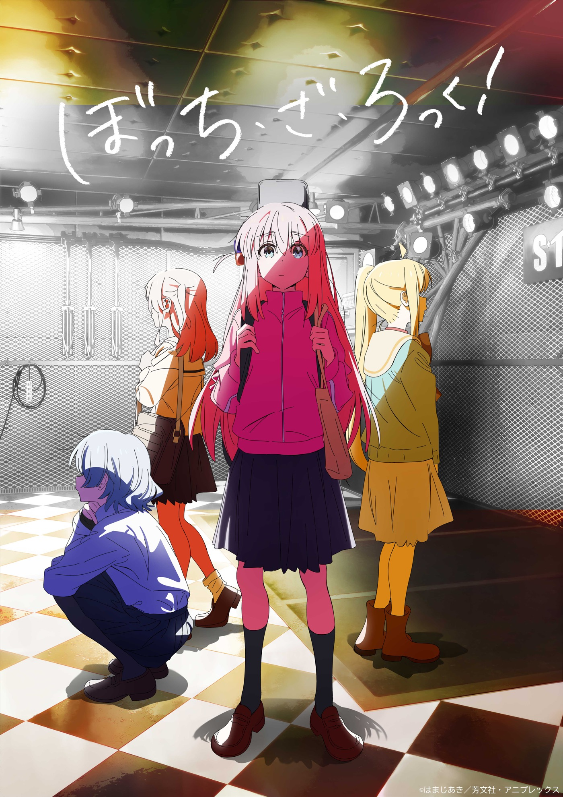
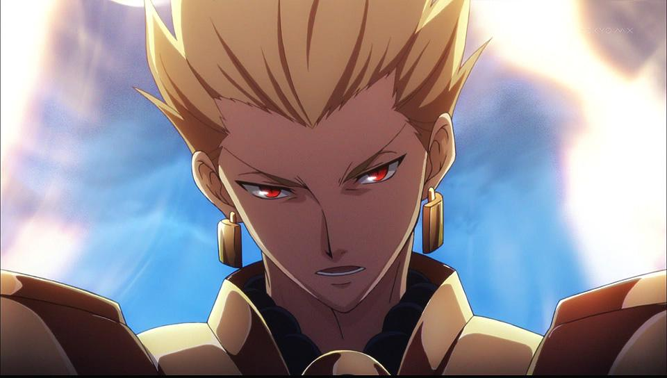
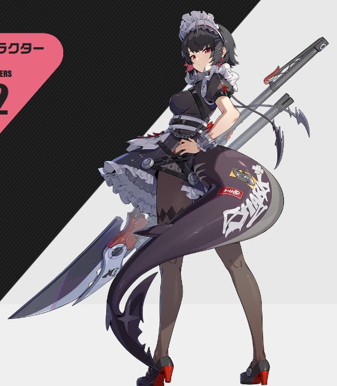
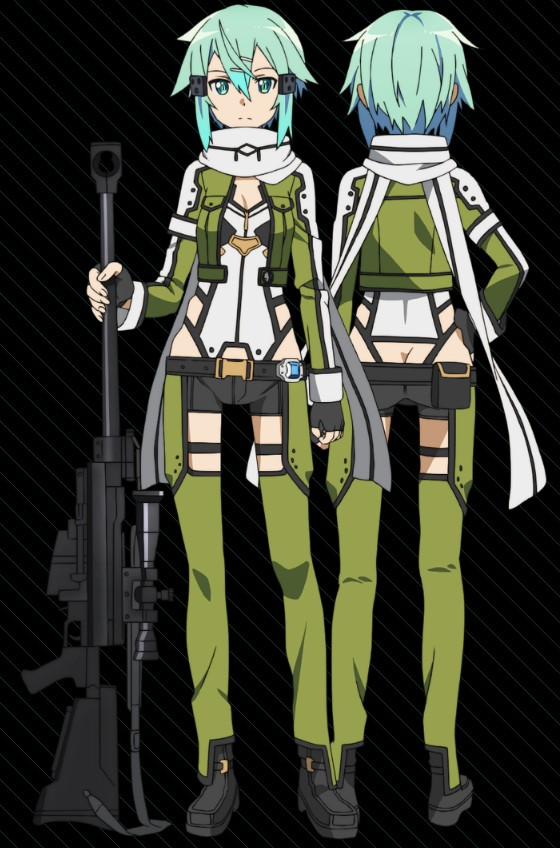

アニメ↓
ゾンビランドサガ
最近映画見てドハマりしましたね。登校中はずっとフランシュシュの曲聞いてる。聖地巡礼しながら生活できるなんて最高だね。
Fateシリーズ
まだ全部見てないけどゲームと合わさって現在ドハマり中
その着せ替え人形は恋をする
喜多川さん可愛すぎ、ごじょーくんと二人で幸せになってほしい
ソードアートオンライン
俺をオタクにした犯人、ｷﾘｯ
ケロロ軍曹
小さい時によく見てた、劇場版めちゃ面白いよ
ゲゲゲの鬼太郎（５作目）
THE昔の雰囲気を残しつつ、平成の雰囲気があるので見やすかった。６作目はゆるさん
ノーゲーム・ノーライフ
ある意味人生観を変えられたアニメかもしれない。色使いが独特で面白い。２期早く来て
ヲタクに恋は難しい
共感できる部分が多すぎる。楽しい
夏目友人帳
シーズンごとに季節が移るので作品内の季節と現実の季節を合わせながら見るとより楽しめるかと。にゃんこ先生もちもちしたい
メイドインアビス
鬱アニメと言われますが見てて楽しいです。毎回ワクワクするどしがたいあにめそす おやおやおや、ナナチは可愛いですね。
ぼっち・ざ・ろっく！
高校二年から見始めてドハマりしたアニメ。劇場版もたくさん見に行った。これを見たからと言ってギターが弾けるようになるわけがないので憧れるだけにしてます。
怪談レストラン
小さいころ見てたアニメ。リプレイの回は印象が強すぎてやばかった。エンディングのlost boyがかっこいい
ゲーム↓
Fate/Grand Order
バーサーカーIS正義 ほぼ周回なので人を選ぶと思う。１０年も続いてセルランに食い込んでくるのはさすがだと思う。スタレとコラボして知名度上がったよね。ストーリー・幕間全部面白い ギルガメッシュかっこいい
学園アイドルマスター
写真撮るのたのしい ライブもいい。そもそも曲がめっちゃいい 花見咲季がガチャで出すぎてやばい なぞに単発でキャラを当てることが多いと感じる今日この頃、友達からの視線が痛い( ´∀｀ )
MineCraft
一人でやっても楽しい。みんなでやるともっと楽しい！たまに建築に没頭するのもいいよね 整地はやだけど
ゼンレスゾーンゼロ
他のHOYOBAゲーとは一線を画す爽快感、よく動いてよく揺れる。それにキャラがかっこいい！ ただ容量がDEKASUGI
poritopia
シンプルだけどとても面白いストラテジーゲームちゃんと部族ごとに特徴を持たせてあるので選ぶところから楽しい
原神
このゲームがmihoyoの名前を広げたといっても過言じゃない。元素反応を駆使して戦うのが楽しい。キャラクターの個性もあるし性能も差別化されてる。これも容量がDEKASUGI
Miitopia
友達のMiiを使って遊んでた。超魔王までは倒したけど裏ステージはやってない
新光神話パルテナの鏡
３ＤＳで一番やったゲームかもしれない。他の３ＤＳのゲームとは全く違う操作システムが楽しかった。
スマブラ
３ＤＳ版を暇さえあればやってた。お気に入りはブラピ。横Ｂでごり押しするの楽しかった。
ドラクエ8
親のプレステ２で延々とやってた。今でも大半の魔法の名前は言える
プロセカ
一番のめりこんでた音ゲー、高校の時は特にやってた。映画もよかったなぁ
推し
フランシュシュ

全員個性が立っててかっこかわいい！曲によって主役に立つ子が違うので脇役がいない！７人の中で唯一低音を担当する純子ちゃんの声がすごくかっこいい。
結束バンド
俺の高校時代はこれでできてるといっても過言ではない。登下校中はずっと聴いてたし一日も欠かすことなく聞いてた
ギルガメッシュ
Fete知らない人でも見たことあるって人はいると思います。いわゆる金ピカさんですね。strangefakeでの活躍に期待
エレン・ジョー
ゼンレスゾーンゼロの最初の限定キャラですね。いつもけだるげなのがかわいい。最近強化されたのもあってすごい使いやすい
シノン
中学時代、SAOにハマって二期まで見て推しになった。多くは語りません。
引用元
https://zombielandsaga.com/disc_comics/
https://www.thefirsttimes.jp/news/0000281479/
https://renote.net/articles/7787
https://zenless.hoyoverse.com/ja-jp/character?id=113671
https://www.swordart-online.net/phantom/character/
画像は出さないけど、他にも推しはいます。
エルキドゥ
マシュ
ナナチ
雷伝将軍
八重神子
ジェーン・ドゥ
その他↓
カラオケ
DAMだと最高は91.357点 JOYだと94.014点 アニソン中心で歌います
よく歌うのは、「THERE IS A REASON」「This game」（ノゲノラ）
「星座になれたら」（ぼざろ）
「残酷な天使のテーゼ」（エヴァ）
「I beg you」（Fate/stay night[Heaven's Feel]）
「プランＡ」（逃げ若）
「花になって」（薬屋のひとりごと）
「Deep in Abyss」（メイドインアビス）
「うまぴょい伝説」（ウマ娘）
弓道
やればやるほど奥が深い、他のスポーツとは一線を画すものだと思う。季節を感じながら弓を引くとすごく気持ちがいい。みんなアーチェリーと同じとかいうけど、弓道は武道です。これは譲らない。おすすめの弦は「吟」「茜」「光」弦音がいいし引きやすい。ほしい弓は「清雅」見た目が好き。
先日！やっと弓を購入いたしました！「直心Ⅲバンブー」でございます！送料込みでなんとほぼ7万！